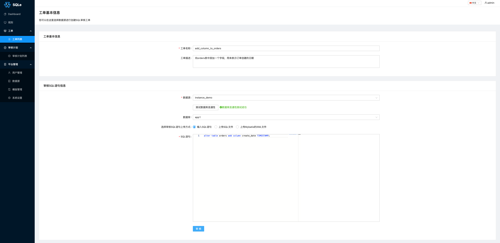
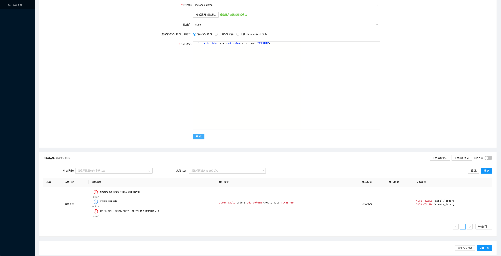
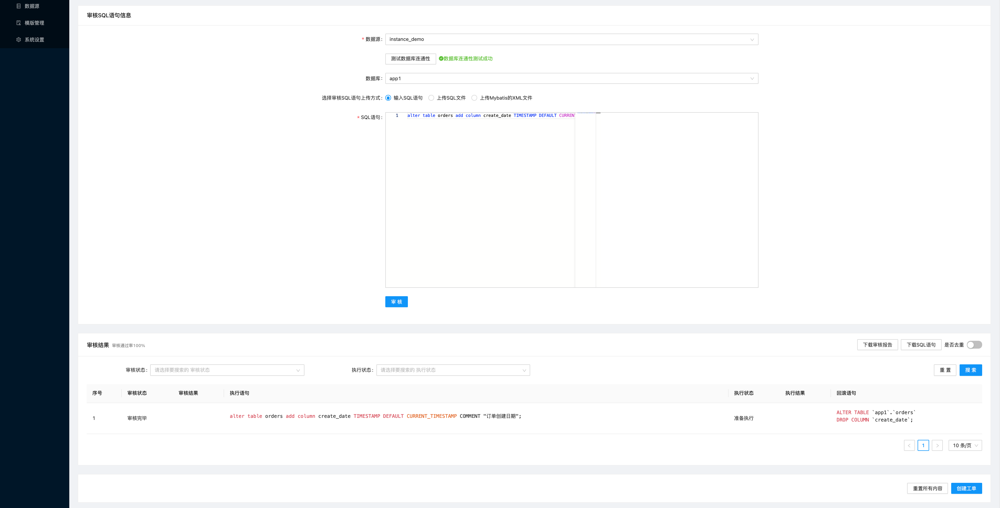
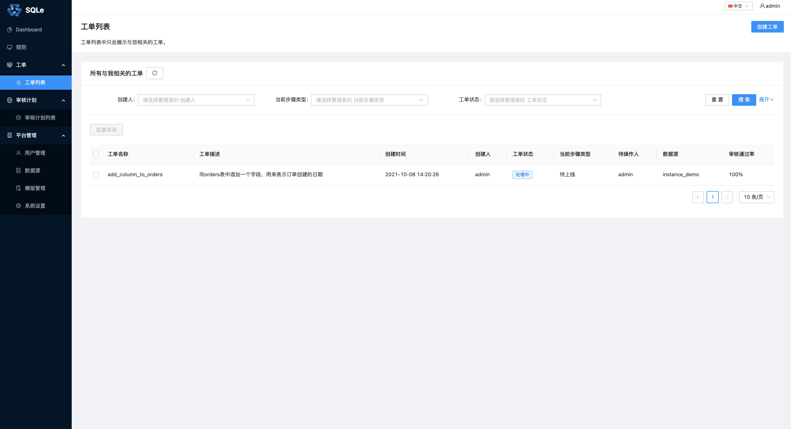

审核工单管理
在这一节中，会用一个具体的案例来逐一介绍「审核工单管理」中的各个功能模块。
工单状态
工单状态流转图

工单状态介绍
处理中
创建完的工单自动进入处理中状态，处理中代表工单正在流程审批中或者还未上线。
已驳回
处理中的工单可以由每级的审批人或者上线人进行驳回，驳回后工单进入已驳回状态；- 此状态的工单可以由创建人或者超管用户进行修改并重新提交工单。
已关闭
处理中或已驳回的工单可以由创建人或者超管用户在任何时刻关闭工单，工单流转结束无法再操作；- 已经进入上线流程的工单无法关闭。
定时上线
- 审批通过的工单，会进入上线阶段，可以由上线人设置定时上线；
- 已经设置定时上线的工单可以由上线人取消定时上线，此时工单回到
处理中,可以再次进行驳回、定时上线、立即上线。
正在上线
- 当上线人进行立即上线，工单会短暂的进入
正在上线阶段，该阶段的时间取决于SQL是否上线完毕； - 定时上线的工单到时间会自动进行SQL上线，此时工单也会进入
正在上线阶段； - SQL上线阻塞的工单会一直处于
正在上线状态。
上线成功
SQL上线成功的工单会进入上线成功状态，工单流转结束无法再操作。
上线失败
SQL上线失败的工单会进入上线失败状态，工单流转结束无法再操作。
创建审核工单
在左侧导航栏的「工单」中的「工单列表」页面中，点击「创建工单」，审核工单相关信息，如下图：

- 工单名称：该字段需要保证工单全局唯一性。
- 工单描述：略
- 数据源：表示修改最终会应用到哪个数据源。
- 数据库：表示 orders 表所在的 schema，相当于执行 use 语句。
- SQL 语句：填写需要上线的 SQL 语句，该语句会被审核。
在确认需要上线的 SQL 语句后，点击页面下方的「审核」按钮：

在审核结果列表中，可以看到被审核的 SQL 语句（alter table orders add column create_date TIMESTAMP）不符合该数据源上绑定的审核规则（或者说这条 SQL 触发了该数据源上的审核规则）。
按照审核结果给出的提示修改 SQL 语句，再次点击「审核」按钮：

可以看到，修改后的 SQL 已经完全符合规范，审核通过率也从 0% 变成了 100%。点击「创建工单」，回到工单列表，即可看到该工单显示为处理中：
